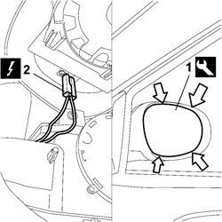

7005R35 DOOR MIRROR REFLECTOR (ONE), LEFT OR RIGHT - R.R
- Path
- Procedures > 70 FITTINGS > 7005 PASSENGER COMPARTMENT FRONT SIDE DOORS > 7005R FRONT DOOR MIRRORS > 7005R35 DOOR MIRROR REFLECTOR (ONE), LEFT OR RIGHT - R.R
- Kind
- repair procedure (removal / refitting; the operation number is the code)
- Applies to
- all engines; all production periods
- Interactive page
- https://sloeber94.github.io/elrnDB-fCrm/en/#/194000885
Applies to: all engines; all production periods
 Removing
Removing
 Refitting
Refitting- Turn the ignition key to the OFF position.
- Disconnect the negative battery terminal.
Description | Connector | |
|---|---|---|
BATTERY |
1. Carefully apply the appropriate tool the arrowed points and prise out the reflector.
Tool | Description | Function | Validity |
|---|---|---|---|
1878077000 | Knife | Retainer removal |
2. Disconnect the door mirror reflector electrical connections and remove.

Applies to: all engines; all production periods
Refitting
Removing- Connect the electrical connections to the reflector.
- Fit the reflector to the door mirror adjustment motor, ensure the the the clips are correctly inserted in their seats.
- Connect the negative battery terminal.
Description | Connector | |
|---|---|---|
BATTERY |